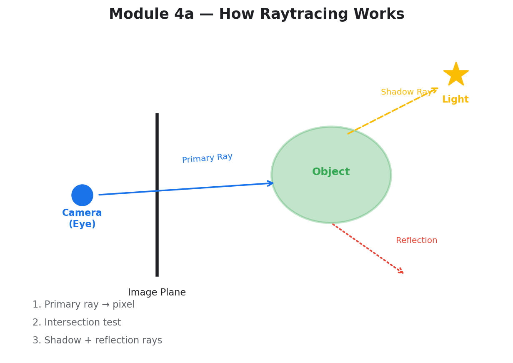
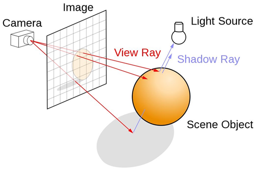
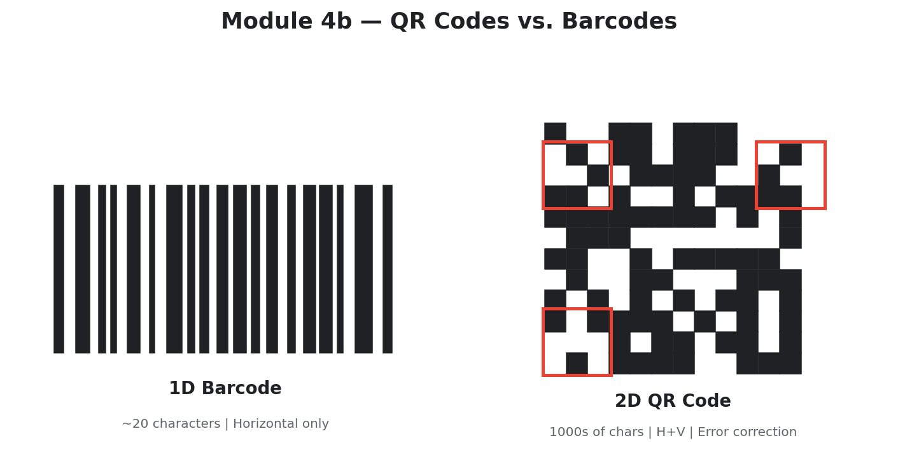

| Assignment Type | Assignment — Technical Analysis |
|---|---|
| Topic | Raytracing rendering technique and real-world applications |
Raytracing is a rendering technique used to generate an image by tracing the path of light as pixels in an image plane and simulating the effects of its encounters with virtual objects. Unlike traditional rendering (rasterization), which projects 3D polygons onto a 2D screen, raytracing mimics the way light works in the real world — but in reverse: it “shoots” rays of light from the camera into the scene (NVIDIA Developer, n.d.).
| Step | Description |
|---|---|
| 1. Primary Rays | A ray is sent from the viewpoint through each pixel on the screen |
| 2. Intersection | The computer calculates where that ray hits an object in the 3D environment |
| 3. Secondary Rays | Reflections, refractions, and shadows are calculated by bouncing more rays toward light sources |


| Example | Application | Why Raytracing Matters |
|---|---|---|
| Cyberpunk 2077 | Real-time Lighting | Path Tracing creates incredibly realistic neon reflections on wet city streets |
| Toy Story 4 | Offline Rendering | Pixar used complex raytracing for intricate reflections in the antique store scenes |
| IKEA Catalog | Interior Design | Over 75% of catalog images are 3D renders using raytracing, not real photographs |
| Minecraft RTX | Education / Tech Demo | Shows the stark difference between flat lighting and realistic light bouncing |
| Assignment Type | Puzzle — Research & Web Development |
|---|---|
| Topic | QR Code history, comparison with barcodes, and AR applications |
| Live Website | module04-zaldivarcesar-itai1370.netlify.app |
A QR code is a two-dimensional matrix barcode that stores information both horizontally and vertically. The QR code system was developed in the 1990s by engineers at DENSO WAVE (affiliated with Toyota), led by Masahiro Hara, to address the growing limitations of traditional barcodes in automotive manufacturing. Traditional barcodes could store only about 20 alphanumeric characters, which was insufficient for complex multi-site production tracking.


| Feature | Barcode (1D) | QR Code (2D) |
|---|---|---|
| Data Capacity | Low (~20–25 characters) | High (thousands of characters) |
| Dimensions | Horizontal only | Horizontal and Vertical |
| Error Correction | None — unreadable if damaged | High — readable even if 30% is damaged |
| AR Utility | Limited | Excellent — spatial anchoring for AR overlays |
Raytracing fundamentally changed how we create photorealistic digital images, and GPU advances have now made real-time raytracing accessible in consumer video games. The IKEA example was especially eye-opening — most people assume catalog images are photographs, but the majority are computer-generated renders.
Building a website to present the QR code research was one of the most hands-on experiences of the semester. I learned that QR codes are far more sophisticated than they appear, with built-in error correction and spatial orientation features that make them ideal for augmented reality anchoring. You can visit my live site at module04-zaldivarcesar-itai1370.netlify.app.
NVIDIA Developer. “Ray Tracing.” NVIDIA, n.d., https://developer.nvidia.com/discover/ray-tracing.
DENSO WAVE. “QR Code Development Story.” DENSO WAVE Technologies, n.d.